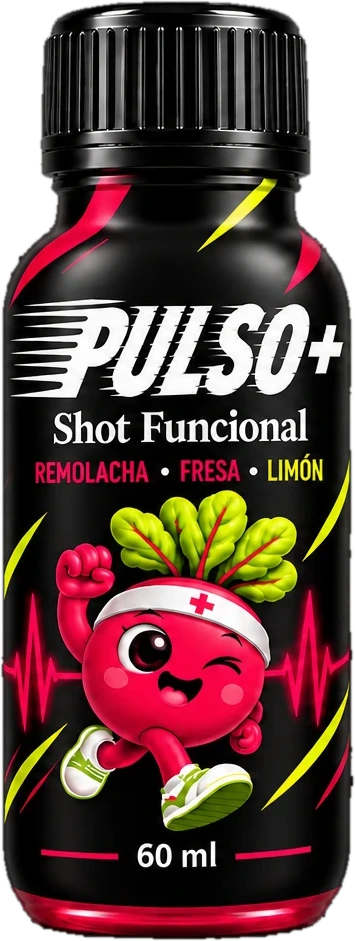
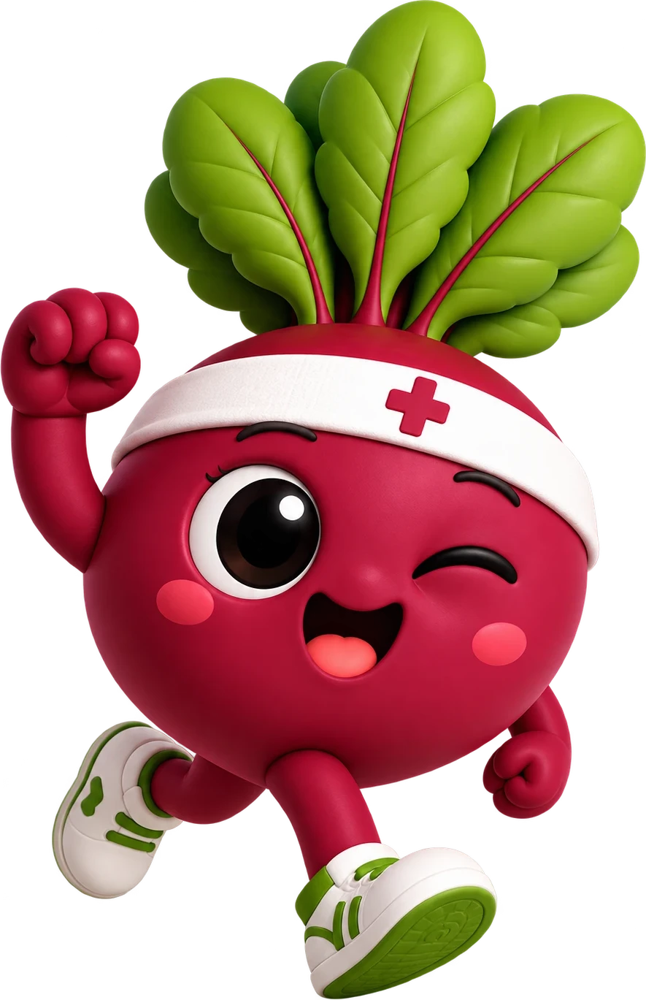

01
Energía natural
Nitratos de la beterraga que tu cuerpo convierte en óxido nítrico: más oxígeno para tus músculos.
Beterraga · nitratosPotencia tu rendimiento y acelera tu recuperación con el poder natural de la beterraga, la fresa y el limón.

Beti entrena, suda y se recupera contigo. Todo lo que tiene la beterraga, concentrado en un shot que cabe en tu bolsillo.

Tres efectos en un solo trago, sin estimulantes artificiales.
Nitratos de la beterraga que tu cuerpo convierte en óxido nítrico: más oxígeno para tus músculos.
Beterraga · nitratosPolifenoles de la fresa y vitamina C del limón contra el estrés oxidativo.
Fresa · limónPara el gimnasio, la pista o la oficina. Listo para tomar donde estés.
Formato 60 ml